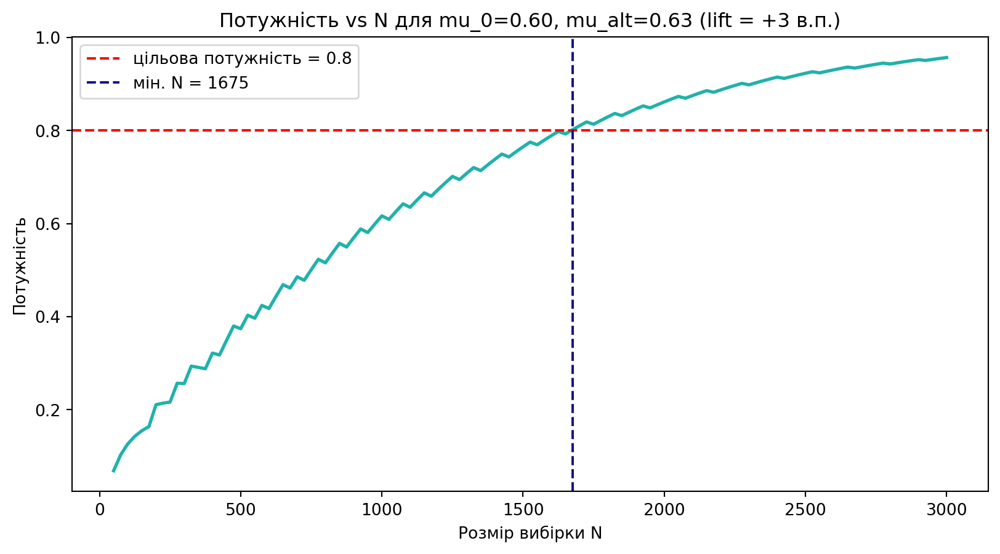

def my_binom_test(q, n, mu0=0.5):
"""
Версія 1. Однобічний біноміальний тест H1: mu > mu0.
Параметри
---------
q : кількість успіхів у вибірці
n : розмір вибірки
mu0 : ймовірність успіху при H0
Повертає
--------
p-value (число у [0, 1])
"""
return 1 - binom.cdf(q - 1, n, mu0)Практика 1
Будуємо власну binom.test для A/B-експерименту
Що ми робимо сьогодні
На лекції ми по черзі побудували окремі цеглинки: критичну область, \(p\)-value, потужність, MDE та довірчий інтервал. Сьогодні ми збираємо їх в один інструмент — власну функцію my_binom_test(), схожу за духом на binom.test() в R або scipy.stats.binomtest. У кожній версії додаємо одну нову можливість і відразу перевіряємо її на наскрізному бізнес-кейсі.
1 Кейс: онбординг мобільної гри
Працюємо над грою PixelQuest. Продуктова команда переробила туторіал: він став коротший і має невелику внутрішньоігрову винагороду наприкінці. Перш ніж розкочувати його на всіх нових гравців, потрібно переконатись, що він дійсно піднімає завершення.
- Одиниця спостереження: новий гравець після першого запуску.
- Метрика успіху: гравець завершив туторіал (1) або ні (0).
- Модель: \(Q \sim \text{Binomial}(N, \mu)\) — сума \(N\) Бернуллі.
- Базовий рівень: \(\mu_0 = 0{,}60\) (історичні дані за 3 місяці).
- Бізнес-MDE: ефект < +3 в.п. не вартий ресурсів на впровадження.
- Напрям: нас цікавить лише \(\mu > \mu_0\) → однобічний тест.
- Рівень значущості: \(\alpha = 0{,}05\).
2 Версія 1 — лише \(p\)-value
Найпростіша версія: дано \(n\), \(\mu_0\) та спостережене \(q\), повернути однобічний \(p\)-value для \(H_1: \mu > \mu_0\).
\[ p\text{-value} = P(Q \geq q \mid \mu_0) = 1 - F_{\text{Binom}(n, \mu_0)}(q-1) \]
Перевіримо її на нашому кейсі. Уявімо, що в експерименті взяли участь 100 гравців, і 66 з них завершили туторіал.
p_val = my_binom_test(q=66, n=100, mu0=0.60)
print(f"p-value = {p_val:.4f}")p-value = 0.1303\(p > 0{,}05\) — доказів недостатньо. Це не означає, що нового ефекту немає; це означає, що на 100 гравцях ми не побачили б його надійно навіть якби він був. До цього питання повернемось у блоці про потужність.
3 Версія 2 — три типи альтернативи
Бізнес-команда інколи хоче перевірити «чи змінилося хоч якось» (двобічний тест), а команда антифроду — «чи не впала конверсія» (one-sided less). Додамо параметр alternative.
def my_binom_test(q, n, mu0=0.5, alternative="greater"):
"""
Версія 2. Додаємо параметр alternative.
alternative : {"greater", "less", "two-sided"}
"greater" → H1: mu > mu0
"less" → H1: mu < mu0
"two-sided" → H1: mu != mu0
"""
p_right = 1 - binom.cdf(q - 1, n, mu0) # P(Q >= q)
p_left = binom.cdf(q, n, mu0) # P(Q <= q)
if alternative == "greater":
return p_right
if alternative == "less":
return p_left
if alternative == "two-sided":
return min(1.0, 2 * min(p_left, p_right))
raise ValueError(f"Невідома альтернатива: {alternative!r}")for alt in ("greater", "less", "two-sided"):
p = my_binom_test(q=66, n=100, mu0=0.60, alternative=alt)
print(f"alternative={alt:>10s} → p-value = {p:.4f}")alternative= greater → p-value = 0.1303
alternative= less → p-value = 0.9087
alternative= two-sided → p-value = 0.2607Зверніть увагу: за тих самих даних однобічний \(p\)-value вдвічі менший за двобічний. Саме тому в продуктових A/B зазвичай використовують однобічний — ми «не платимо» за хвіст, який нас не цікавить.
4 Версія 3 — довірчий інтервал через інверсію тесту
Тепер додаємо те, чого справді бракує бізнесу — довірчий інтервал для \(\mu\). Будуємо його так само, як на лекції: перебираємо сітку \(\mu_0\) і збираємо ті значення, які тест не відхиляє.
def my_binom_test(q, n, mu0=0.5, alternative="greater",
alpha=0.05, conf_int=False, grid_step=0.001):
"""
Версія 3. Додаємо conf_int=True → також повертаємо ДІ для mu.
Якщо conf_int=False → повертає лише p-value (як раніше).
Якщо conf_int=True → повертає dict із p_value, ci_low, ci_high.
"""
p_right = 1 - binom.cdf(q - 1, n, mu0)
p_left = binom.cdf(q, n, mu0)
if alternative == "greater":
p_value = p_right
elif alternative == "less":
p_value = p_left
elif alternative == "two-sided":
p_value = min(1.0, 2 * min(p_left, p_right))
else:
raise ValueError(f"Невідома альтернатива: {alternative!r}")
if not conf_int:
return p_value
# Інверсія тесту: збираємо всі mu, які НЕ відхиляються
mu_grid = np.arange(0, 1 + 1e-9, grid_step)
accepted = []
for mu in mu_grid:
pr = 1 - binom.cdf(q - 1, n, mu)
pl = binom.cdf(q, n, mu)
if alternative == "greater":
p_at_mu = pr
elif alternative == "less":
p_at_mu = pl
else:
p_at_mu = min(1.0, 2 * min(pl, pr))
if p_at_mu > alpha:
accepted.append(mu)
ci_low = min(accepted) if accepted else None
ci_high = max(accepted) if accepted else None
return {"p_value": p_value, "ci_low": ci_low, "ci_high": ci_high}Запустимо для нашого експерименту з 100 гравцями:
result = my_binom_test(q=66, n=100, mu0=0.60,
alternative="two-sided",
alpha=0.05, conf_int=True)
print(f"p-value: {result['p_value']:.4f}")
print(f"95% CI for mu: [{result['ci_low']:.3f}, {result['ci_high']:.3f}]")p-value: 0.2607
95% CI for mu: [0.559, 0.751]Тепер однобічний нижній бім (його зазвичай показують у дашбордах):
res_g = my_binom_test(q=66, n=100, mu0=0.60,
alternative="greater",
alpha=0.05, conf_int=True)
print(f"95% lower bound for mu (one-sided): {res_g['ci_low']:.3f}")
print(f"Upper bound: {res_g['ci_high']:.3f} ← завжди 1, не інформативно")95% lower bound for mu (one-sided): 0.575
Upper bound: 1.000 ← завжди 1, не інформативно5 Версія 4 — окрема функція потужності
Потужність — це інше питання, не результат експерименту. Тому зробимо для неї окрему функцію my_binom_power(), яку наш тест зможе використовувати.
\[ \text{Power}(N, \mu_0, \mu_{alt}, \alpha) = P(\text{reject } H_0 \mid \mu = \mu_{alt}) \]
def my_binom_power(n, mu0, mu_alt, alpha=0.05, alternative="greater"):
"""
Потужність однобічного або двобічного біноміального тесту.
Рахуємо «з другого боку»: припускаємо, що справжнє mu = mu_alt,
і питаємо --- з якою ймовірністю наш тест відхилить H0.
"""
if alternative == "greater":
c = int(binom.ppf(1 - alpha, n, mu0)) + 1 # відхиляємо при Q >= c
return 1 - binom.cdf(c - 1, n, mu_alt)
if alternative == "less":
c = int(binom.ppf(alpha, n, mu0)) - 1 # відхиляємо при Q <= c
return binom.cdf(c, n, mu_alt)
if alternative == "two-sided":
c_low = int(binom.ppf(alpha / 2, n, mu0)) - 1
c_high = int(binom.ppf(1 - alpha / 2, n, mu0)) + 1
return binom.cdf(c_low, n, mu_alt) + (1 - binom.cdf(c_high - 1, n, mu_alt))
raise ValueError(f"Невідома альтернатива: {alternative!r}")Перевіримо для нашого кейсу:
for n in (100, 500, 1000, 2000):
pw = my_binom_power(n=n, mu0=0.60, mu_alt=0.63, alpha=0.05, alternative="greater")
print(f"N = {n:>4d} → power = {pw:.3f}")N = 100 → power = 0.127
N = 500 → power = 0.374
N = 1000 → power = 0.617
N = 2000 → power = 0.862При \(N=100\) потужність ~\(0{,}2\): навіть якщо новий туторіал справді кращий на +3 в.п., ми побачимо це лише в 1 експерименті з 5. Це не статистика винна — вибірка просто замала.
Code
n_grid = np.arange(50, 3001, 25)
power = np.array([my_binom_power(n, 0.60, 0.63, 0.05, "greater") for n in n_grid])
min_n = n_grid[power >= 0.8].min()
fig, ax = plt.subplots(figsize=(10, 5))
ax.plot(n_grid, power, color=turquoise, linewidth=2)
ax.axhline(0.8, linestyle="--", color="red", label="цільова потужність = 0.8")
ax.axvline(min_n, linestyle="--", color=blue, label=f"мін. N = {min_n}")
ax.set_xlabel("Розмір вибірки N")
ax.set_ylabel("Потужність")
ax.set_title("Потужність vs N для mu_0=0.60, mu_alt=0.63 (lift = +3 в.п.)")
ax.legend()
plt.show()
6 Версія 5 — MDE і необхідний розмір вибірки
Дві дзеркальні задачі планування. Робимо одну функцію з двома режимами.
def plan_experiment(mu0, alpha=0.05, target_power=0.8,
alternative="greater",
n=None, mde=None,
n_max=50000, n_step=10):
"""
Допомагач для планування.
Передайте РІВНО ОДИН з:
n → повертає MDE при цьому n (мін. ефект із target_power)
mde → повертає мінімальний n для виявлення ефекту mde
Параметри:
mu0 : базовий рівень метрики
alpha : рівень значущості
target_power : цільова потужність (за замовч. 0.8)
alternative : "greater" / "less" / "two-sided"
mde : ефект у долях (наприклад 0.03 = +3 в.п.)
"""
if (n is None) == (mde is None):
raise ValueError("Передайте рівно одне: n або mde")
if n is not None:
# Шукаємо MDE на сітці delta
delta_grid = np.linspace(0, 1 - mu0 - 1e-9, 1000)
powers = np.array([
my_binom_power(n, mu0, mu0 + d, alpha, alternative)
for d in delta_grid
])
fit = delta_grid[powers >= target_power]
return float(fit[0]) if len(fit) else None
# Шукаємо мінімальне n
mu_alt = mu0 + mde if alternative == "greater" else mu0 - mde
for n_try in range(10, n_max + 1, n_step):
if my_binom_power(n_try, mu0, mu_alt, alpha, alternative) >= target_power:
return n_try
return NoneСценарій А: маркетинг каже, що зможе залучити 500 нових гравців. Який ефект ми зможемо виявити?
mde_500 = plan_experiment(mu0=0.60, n=500, alternative="greater")
print(f"MDE при N=500: +{mde_500*100:.2f} в.п. (тобто mu_alt ≥ {0.60+mde_500:.3f})")MDE при N=500: +5.53 в.п. (тобто mu_alt ≥ 0.655)Сценарій Б: продакт-менеджер каже, що ефект менш ніж +3 в.п. не вартий впровадження. Скільки гравців потрібно?
n_needed = plan_experiment(mu0=0.60, mde=0.03, alternative="greater")
print(f"Потрібно гравців для виявлення +3 в.п.: {n_needed}")Потрібно гравців для виявлення +3 в.п.: 16307 Версія 6 — фінальна my_binom_test
Збираємо все в один зрозумілий результат, схожий на R-овий binom.test(). Додамо також точкову оцінку та читабельне резюме.
def my_binom_test(q, n, mu0=0.5,
alternative="greater",
alpha=0.05,
conf_int=True,
mu_alt=None,
grid_step=0.001):
"""
Фінальна версія: робить повноцінний one-sample біноміальний тест.
Повертає словник:
- estimate : q/n
- p_value : p-value тесту
- reject : True/False (p_value <= alpha)
- ci : (ci_low, ci_high) для рівня 1 - alpha
- power_at_alt : потужність для mu_alt (якщо передано)
- mde_at_n : MDE при цьому n
- summary : текстовий рядок з висновком
"""
# p-value (логіка з версії 2)
p_right = 1 - binom.cdf(q - 1, n, mu0)
p_left = binom.cdf(q, n, mu0)
if alternative == "greater":
p_value = p_right
elif alternative == "less":
p_value = p_left
elif alternative == "two-sided":
p_value = min(1.0, 2 * min(p_left, p_right))
else:
raise ValueError(f"Невідома альтернатива: {alternative!r}")
# ДІ через інверсію (логіка з версії 3)
ci = (None, None)
if conf_int:
mu_grid = np.arange(0, 1 + 1e-9, grid_step)
accepted = []
for mu in mu_grid:
pr = 1 - binom.cdf(q - 1, n, mu)
pl = binom.cdf(q, n, mu)
if alternative == "greater":
pv = pr
elif alternative == "less":
pv = pl
else:
pv = min(1.0, 2 * min(pl, pr))
if pv > alpha:
accepted.append(mu)
if accepted:
ci = (min(accepted), max(accepted))
# Потужність і MDE (з версій 4-5)
power_at_alt = None
if mu_alt is not None:
power_at_alt = my_binom_power(n, mu0, mu_alt, alpha, alternative)
mde_at_n = plan_experiment(mu0=mu0, n=n, alpha=alpha,
target_power=0.8, alternative=alternative)
# Резюме
decision = "ВІДХИЛЯЄМО H0" if p_value <= alpha else "не відхиляємо H0"
summary = (
f"n={n}, q={q}, mu_hat={q/n:.3f}\n"
f"H0: mu = {mu0} vs H1: mu {'>' if alternative=='greater' else ('<' if alternative=='less' else '!=')} {mu0}\n"
f"p-value = {p_value:.4f} (alpha = {alpha}) → {decision}\n"
f"{int((1-alpha)*100)}% CI for mu: [{ci[0]:.3f}, {ci[1]:.3f}]\n"
f"MDE при n={n}, power=0.8: +{mde_at_n*100:.2f} в.п."
)
if power_at_alt is not None:
summary += f"\nPower при mu_alt={mu_alt}: {power_at_alt:.3f}"
return {
"estimate": q / n,
"p_value": p_value,
"reject": p_value <= alpha,
"ci": ci,
"power_at_alt": power_at_alt,
"mde_at_n": mde_at_n,
"summary": summary,
}8 Запускаємо повний цикл експерименту
Тепер пройдемось «як на роботі»: спершу планування, потім симуляція запуску, потім звіт.
8.1 Крок 1. Планування
mu0 = 0.60
business_mde = 0.03 # +3 в.п. -- мінімальний цікавий ефект
alpha = 0.05
target_power = 0.8
N = plan_experiment(mu0=mu0, mde=business_mde,
alpha=alpha, target_power=target_power,
alternative="greater")
print(f"План: запускаємо тест на N = {N} гравцях")
print(f" (мін. виявимий ефект = +{business_mde*100:.0f} в.п., power = {target_power})")План: запускаємо тест на N = 1630 гравцях
(мін. виявимий ефект = +3 в.п., power = 0.8)8.2 Крок 2. Симульований запуск
Симулюємо реальність, у якій новий туторіал дійсно покращує завершення до \(0{,}635\) (значення, якого аналітик заздалегідь не знає).
np.random.seed(2026)
latent_mu = 0.635
sample = binom.rvs(1, latent_mu, size=N)
q = int(sample.sum())
print(f"Спостережено: q = {q} завершень із {N} (mu_hat = {q/N:.3f})")Спостережено: q = 1022 завершень із 1630 (mu_hat = 0.627)8.3 Крок 3. Аналіз
result = my_binom_test(
q=q, n=N, mu0=mu0,
alternative="greater",
alpha=alpha,
conf_int=True,
mu_alt=mu0 + business_mde,
)
print(result["summary"])n=1630, q=1022, mu_hat=0.627
H0: mu = 0.6 vs H1: mu > 0.6
p-value = 0.0137 (alpha = 0.05) → ВІДХИЛЯЄМО H0
95% CI for mu: [0.607, 1.000]
MDE при n=1630, power=0.8: +3.00 в.п.
Power при mu_alt=0.63: 0.8008.4 Крок 4. Звіт для стейкхолдера
Підсумок A/B-тесту нового туторіалу
- Спостережена конверсія: 62.7% (baseline 60.0%).
- Однобічний 95% нижній бім: np.float64(60.7)%.
- Тест за \(\alpha=0{,}05\): відхиляємо H0 - є докази покращення ($p = $ np.float64(0.0137)).
- Очікувана потужність плану на ефект +3 в.п.: np.float64(0.8).
Рекомендація: якщо нижня межа ДІ перевищує бізнес-поріг 63% — викочуємо. Інакше — ітеруємо дизайн або продовжуємо збирати дані.
9 Підводні камені інтерпретації
Самоперевірка перед запуском
Якщо хоч на одне «ні» — тест запускати рано.